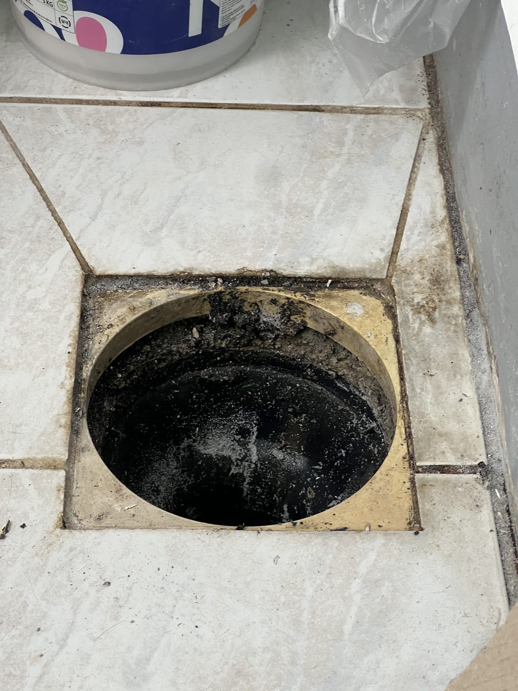
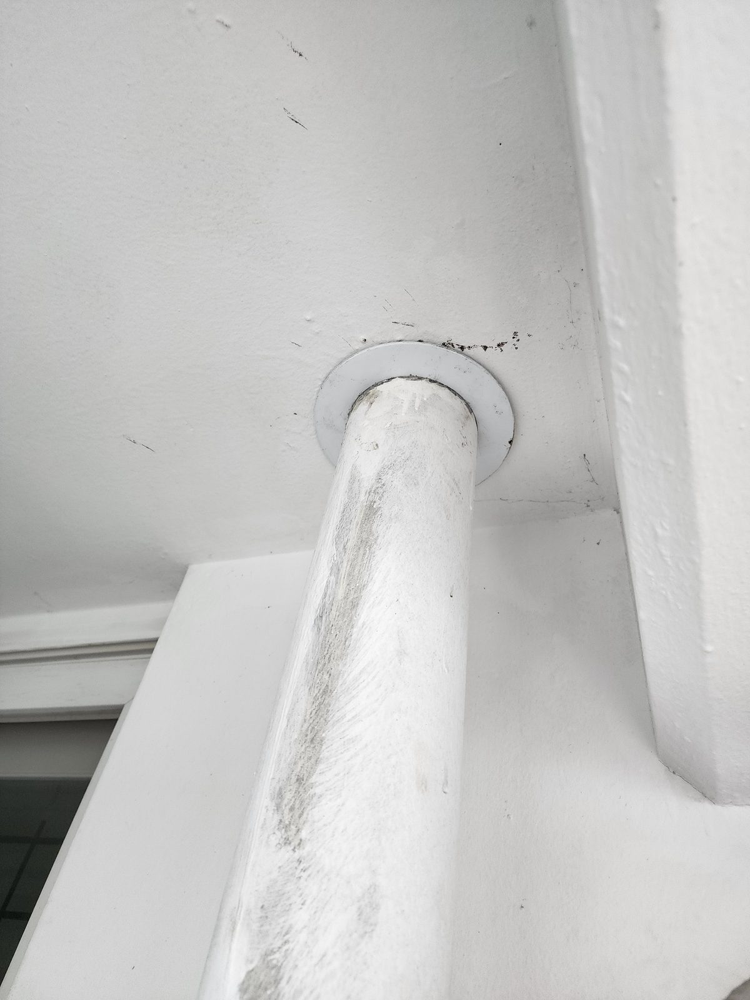
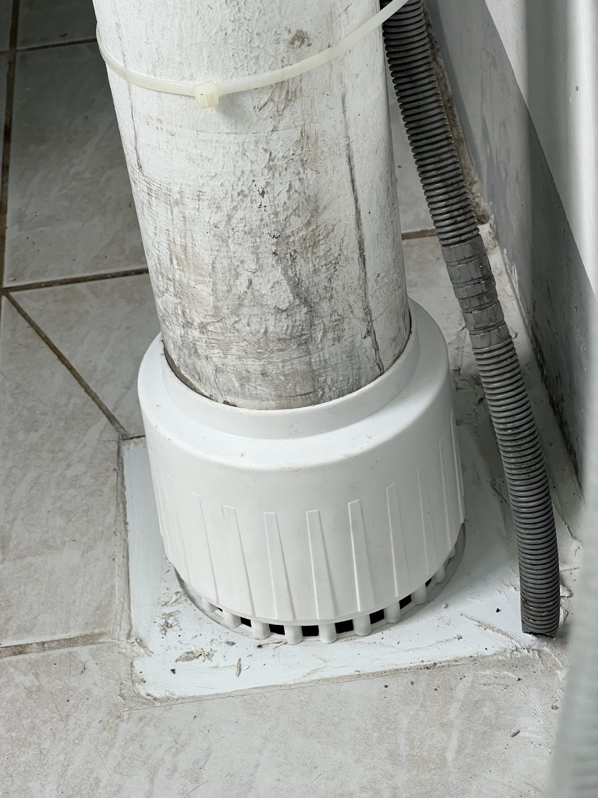

대전 한밭우성아파트 베란다 우수관 보수 — 바닥 배수구와 하부 연결 부속 교체

작업 핵심
현장 작업 한눈에 보기
- 현장
- 대전 한밭우성아파트 베란다
- 문제
- 바닥 배수구·수직 우수관
연결부 상태 점검 - 작업
- 배수구·천장 관통부 확인
하부 연결 부속 설치 - 결과
- 하부 연결 부속 설치 후
바닥 주변 마감 범위 기록
대전 한밭우성아파트 베란다에서 바닥 배수구를 열어 처음 상태를 남긴 뒤, 수직 우수관을 따라 천장 관통부까지 살폈습니다. 마지막에는 다시 바닥으로 내려와 하부 연결 부속을 설치하고 마감 범위를 확인했습니다.
작업의 시작은 바닥 배수구였습니다
먼저 배수구를 개방해 안쪽과 주변 타일 경계를 함께 살폈습니다. 손을 대기 전 상태를 비교할 수 있도록 배수구 전체가 보이는 거리에서 첫 사진을 남겼습니다.

배관을 따라 천장까지 시선을 올렸습니다
바닥을 확인한 다음에는 수직 우수관을 따라 위쪽으로 살폈습니다. 배관이 천장을 통과하는 위치와 주변의 기존 마감, 관이 이어지는 방향을 한 장에 담았습니다.

다시 바닥으로 내려와 새 부속을 맞췄습니다
확인한 바닥 연결 위치에 새 부속을 설치하고 수직 우수관 하부와 맞췄습니다. 부속이 관을 감싸고 바닥으로 이어진 상태가 보이도록 작업 중 모습을 가까이 기록했습니다.

표지 사진으로 마무리 범위를 다시 확인했습니다
표지에 사용한 작업 후 사진에는 하부 연결 부속과 바닥 주변을 한 화면에 담았습니다. 배수 이상이나 물자국이 반복된다면 한 지점만 보기보다 배수구·관통부·연결부가 함께 보이는 사진으로 현장 점검을 요청하는 것이 좋습니다.